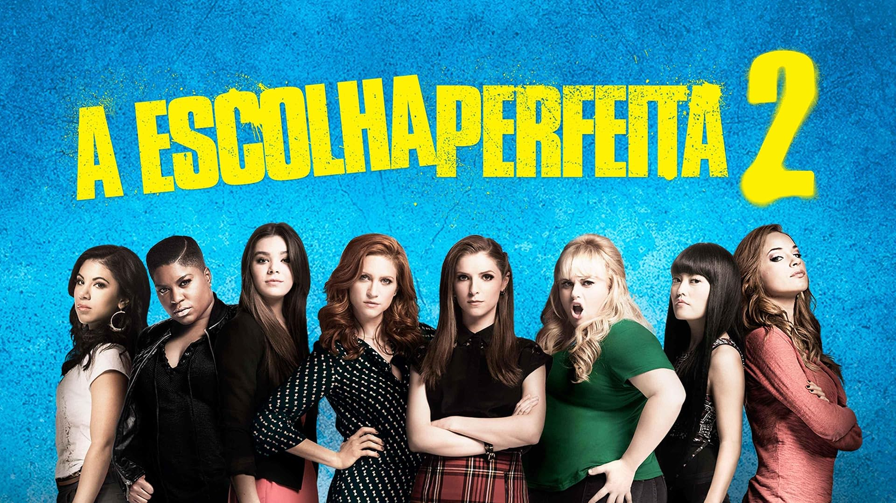
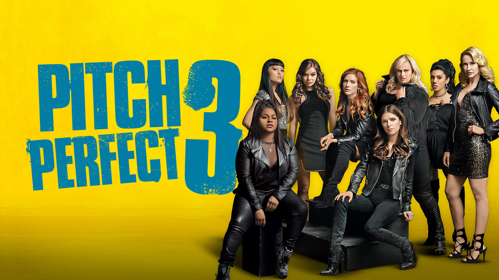
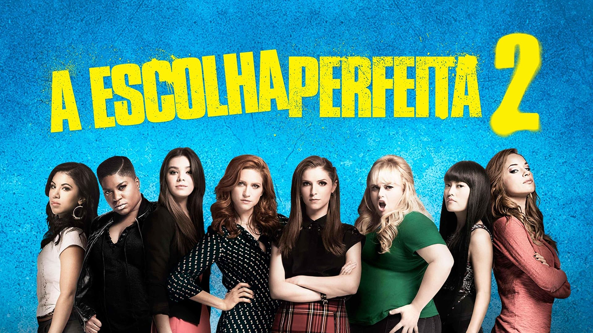
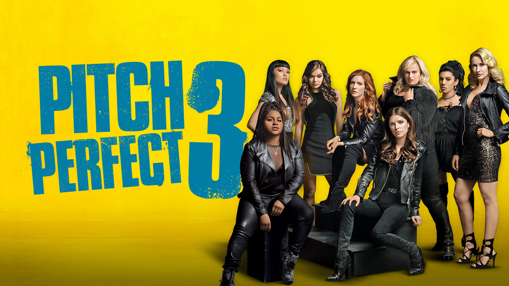

SOBRE MIM:
LAÍS ALVES DE OLIVEIRA
.jpeg)
Olá! Eu sou Laís Alves de Oliveira
Tenho 18 anos, moro em São João e atualmente estudo Informática para a Internet no IFRJ. Trabalho como jovem aprendiz na área de administração, mas meu grande sonho é cursar Educação Física e atuar profissionalmente nesse campo.
Sou apaixonada por atividades físicas, especialmente musculação, corrida e crossfit. Gosto muito de dançar, ouvir música e assistir séries nas horas vagas. Estou vivendo uma nova fase da minha vida e estou muito feliz com as oportunidades que estão surgindo.
Este espaço foi criado para compartilhar um pouco sobre mim, minhas paixões e meus objetivos. Seja bem-vindo(a)!
LIVRO FAVORITO:
UMA MULHER NO ESCURO
📚 Uma Mulher no Escuro — Rafael Montes
🌑 Suspense, mistério e passado sombrio
"Uma Mulher no Escuro" é um thriller psicológico nacional que prende o leitor do início ao fim. Escrito por Rafael Montes, um dos maiores nomes do suspense contemporâneo no Brasil, o livro conta a história de Victoria Bravo, uma mulher marcada por uma tragédia que vive tentando fugir do próprio passado.
Quando Victoria era criança, presenciou o assassinato brutal de seus pais dentro de casa. Ela sobreviveu, mas ficou traumatizada, principalmente porque o assassino — conhecido como "O Palhaço" — nunca foi preso. Agora, adulta, ela tenta levar uma vida normal, mas tudo muda quando sinais de que o assassino voltou começam a aparecer.
A partir daí, Victoria se vê presa entre o que é real e o que pode estar em sua mente. A narrativa é cheia de reviravoltas, tensão e segredos, fazendo o leitor questionar o tempo todo em quem confiar.
💭 Por que vale a pena ler?
- É um livro intenso e rápido, daqueles que a gente lê em poucos dias.
- Mostra como traumas de infância podem nos acompanhar para sempre.
- Tem uma protagonista forte, complexa e humana.
- Perfeito para quem gosta de mistério e suspense psicológico.
FILME FAVORITO:
🎤💖 A ESCOLHA PERFEITA — A TRILOGIA
 



🎬 A Escolha Perfeita 1 — Onde tudo começou...
Imagina uma garota chamada Beca, que só quer saber de música e viver no mundinho dela… até que ela entra num grupo todo doido e talentoso: As Barden Bellas! 👯♀️✨
Com personalidades únicas, elas precisam aprender a cantar juntas (sem desafinar na amizade!) pra vencer uma competição de a capela. Resultado? MUITO mashup incrível, tretas engraçadas e momentos de arrepiar! 💥🎶
🎤 A Escolha Perfeita 2 — Mais vozes, mais drama!
Agora super famosas, as Bellas passam vergonha em um show pro presidente dos EUA 😂 e precisam reconquistar o respeito do mundo vencendo o Campeonato Mundial! 🌍
Com rivais perfeitinhas e assustadoras, elas têm que lembrar quem são de verdade — irmãs de canto, de alma e de risada! 💕
🎉 A Escolha Perfeita 3 — Despedida com glitter e ação!
Formadas e sem microfone, elas sentem saudade dos palcos e decidem fazer uma turnê internacional. Só que… vem ação, drama, espionagem e até problema de família 😱
É a última dança, o último agudo, e a prova de que a amizade delas é mais forte que qualquer nota musical! 💫🎤
💬 Por que a gente AMA essa trilogia?
- 🎶 Músicas INCRÍVEIS pra cantar junto
- 😂 Humor leve, criativo e muito divertido
- 💪 Um grupo feminino poderoso, real e engraçado
- 💖 Fala sobre amizade, confiança e seguir seus sonhos
- 🌟 E claro... a Amy Gorda, um ícone da comédia!